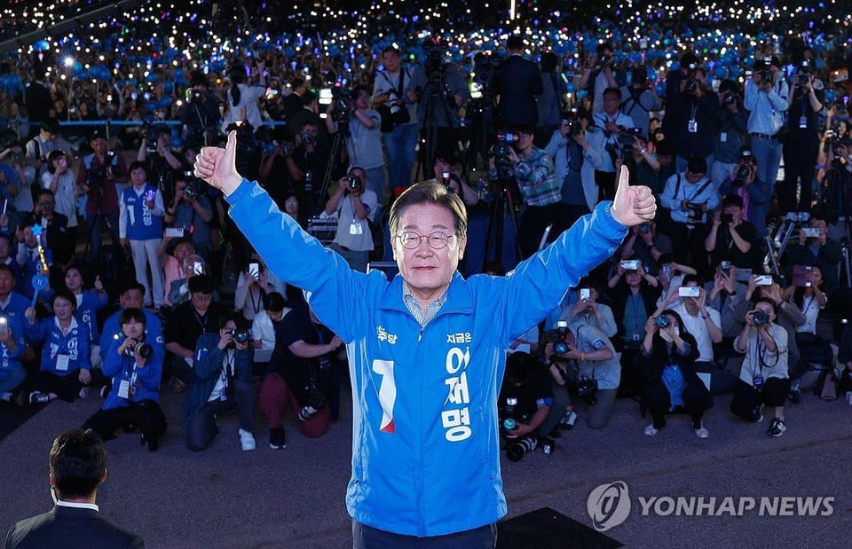

世界苦茶06月04日新闻 | 45条 | 李在明当选韩国总统

李在明当选韩国总统 | 上海新房成交量大增 | 马斯克再次攻击大而美法案 | 乌克兰攻击克里米亚大桥 | 荷兰政府因极右翼党解散
每天三件事：
苦茶数据
美元兑人民币：7.19（昨日7.19，前日7.21）
美元兑日元：144.03（昨日142.94，前日143.47）
上证指数：3376（昨日3362，前日3347）
标普500指数：5970（昨日5935，前日5911）
比特币：105616（昨日105240，前日104928）
布伦特原油：65.44（昨日64.83，前日64.27）
中国新闻
• 知情人士说，郑雁雄被撤换，与长和巴拿马港口售美案有关： 其上级领导未能事先掌握该项交易的消息，担任香港中联办主任、特区国安事务顾问的郑雁雄部分咎责于此事。多位香港建制派6月2日收到郑的简讯，信中感谢“各位战友、挚友、亲友”，说日后“北京见”，配图为英国剑桥《再别康桥》石碑。
• 大连日企命案嫌犯落网 ：日本媒体星期二上午报道两名日本人在辽宁省大连市被杀害后，大连市公安局证实了这项消息。大连市公安局星期二下午在官方微博发布警情通报，称5月23日接到报警，发生了一起导致两人死亡的刑事案件，犯罪嫌疑人已被抓获。通报披露犯罪嫌疑人是一名袁姓男子，长居日本。两名日本籍被害人是袁姓男子在日期间的商业伙伴，因经营合作产生矛盾引发该案。
• 韩称中浮标或涉军事侦察 ：韩国外交部官员称，不排除中国在黄海周边海域设置的浮标具有军事侦察用途。据韩联社报道，韩国海军曾于2023年5月在西部海域的离於岛以西东经123度附近海上，发现中国设置的三个大型浮标。韩国外交部官员星期一说，韩国政府正与相关部门紧密协作，全面评估中国设置的浮标可能具有军事侦察目的等各种可能性，并密切关注相关动向。
• 女耽美作者遭警方跨省传唤 ：香港媒体报道，近日中国大陆有多名网络写手因发表含情色内容的网络小说，遭甘肃兰州警方跨省传唤。据报，这些写手大多为20岁左右年轻女子。多名律师和学者就此公开质疑兰州警方执法的过程存在漏洞，并愿意向这些涉案人员提供法律援助。综合《明报》和《星岛日报》星期二报道，自5月下旬，陆续有近10名网民在微博发贴称，曾在台湾成人文学网站“海棠文学城”发表描述男男同性、含情色内容的耽美作品，并因网站付费订阅机制产生收益，被兰州警方以制作传播淫秽物品牟利等罪名拘捕。有人称收到警方电话传唤后筹措路费前往兰州配合调查；也有人控诉审讯期间被要求脱光衣服接受检查、回答私隐问题，感到人格受辱；还有人慨叹当初写网文是想帮补生计，没料到面临牢狱之灾和巨额罚金。报道称，她们大多为20岁左右的年轻女子。
• 财团洽购长和港口会中方 ：计划买下香港长和集团所持有的巴拿马港口等港口的财团，据报已与中国反垄断监管机构举行了会谈。英国《金融时报》星期一引述知情人士报道，地中海航运公司和美国资产管理公司贝莱德的代表，最近几周与中国国家市场监督管理总局进行了面对面的讨论。其中一名知情人士说，MSC和贝莱德正在与长和讨论是否调整最后交易的结构，他们希望这能让中国官员和美国政府都感到满意。
• 日军机拦截中无人机 ：日本国防部通报，一架疑似来自中国大陆的无人机从东海飞入太平洋后，在台湾东部外海上空盘旋并折返。日本国防部统合幕僚监部星期一发布消息称，当天早上侦测到一架疑似中国大陆的无人机自东海方向飞来，穿越与那国岛及台湾之间空域进入太平洋，随后在台湾东部外海上空盘旋，并调头循原路线飞返东海。对此，日本航空自卫队西南防空队紧急出动战斗机应对。
• 卢卡申科访华三日会习 ：视中国为亲密盟友的白罗斯总统卢卡申科星期一起访华三天，官媒称北京将举办他和中国国家主席习近平之间的“传统友好家庭会议”。白罗斯国家通讯社引述领导人新闻处消息报道，卢卡申科6月2日至4日对中国进行访问。报道称，北京将举办卢卡申科与习近平之间的“传统友好家庭会议”。两人将先以一对一形式会晤，然后以非正式的形式讨论白中关系现状和前景，通过实施联合项目和促进多边倡议，最大限度推动两国关系。
亚太印太新闻
• 李在明当选韩国总统 ：韩国中央选举管理委员会于星期三早上7时左右，正式确定共同民主党总统候选人李在明当选韩国第21届总统。李在明开始履职。韩联社报道，韩国中央选举管理委员会表示，计票工作已全部完成，李在明赢得1728万7513票，得票率49.42%；国民力量党候选人金文洙赢得1439万5639票，得票率41.15%。本届选举共计4439万1871名合格选民，投票率达79.4%，创下1997年以来的最高纪录，反映出韩国选民对这场“政治清算选举”的高度参与意愿。
• 韩国大选投票率新高 ：韩国中央选举管理委员会官网发布的初步统计数据显示，周二举行的第21届总统选举最终投票率高达79.4%，创下自1997年第15届总统选举以来的最高纪录。韩联社报道，这一数据是上月29日和30日进行的缺席投票、旅外公民投票、船上投票、邮寄投票和正式投票的投票率总和。本届选举的投票率，比2017年举行的第19届与2022年的第20届总统选举最终投票率，分别高出2.2个和2.3个百分点。按地区看，光州市投票率最高，为83.9%，济州道最低，为74.6%。首尔为80.1%。
• 泰国购瑞典鹰狮战机 ：泰国空军通过社交媒体发布消息称，它将采购瑞典萨博公司最新型“鹰狮”战斗机。此举旨在增强泰国空军实力，以保卫国家主权。中国新闻社引述泰国空军星期二发布的公告说，采购计划是推动空军发展战略的重要项目之一，符合泰国把空军发展成为强大而高效的空中力量的愿景。此次采购将给空军补充高性能装备，用于保卫国家主权和维护国家利益，并有效应对当前和未来环境中的威胁。与此同时，泰国空军还发布了一段时长近两分钟的视频，展示了“鹰狮”E/F战斗机的性能。
• 台民进党涉谍5人被开除 ：台湾民进党日前爆出数名党工涉用中国大陆APP向北京泄露敏感情资案，五党工遭开除。民进党对此回应，将强化内部机制，包括对新进党员进行背景调查。综合台媒《联合报》和ETtoday新闻云报道，民进党发言人吴峥星期二表示，民进党在这几波大陆间谍事件曝光后，展开内部强化机制。这包括党公职出境的报备、事后报告、强化台湾安全意识教育，以及针对内部新进人员的背景调查。未来党工也必须填报家人是否在中国大陆经商等情事表单。吴峥表示，这几起大陆间谍案有共同点，被接触对象可能曾到中国大陆经商、发展，期间被大陆接触渗透。
• 美日拟联合开发金穹 ：日经新闻报道，美国总统特朗普6月与日本首相石破茂通电话时，讨论了与日本合作开发美国“金穹”导弹防御系统的事宜。据报道，两国预计将合作开发拦截来袭威胁的系统，而东京的参与，有望成为它在关税谈判中争取美国做出让步的筹码。不过，报道没有引述消息来源。特朗普5月20日说，他已为价值1750亿美元的“金穹”系统选定规划方案，并宣布这个能够抵御弹道导弹、高超音速导弹和先进巡航导弹的系统将在2029年1月其任期结束前“全面投入使用”。
• 台首次申请出席长崎仪式 ：日媒报道称，日本长崎市已收到台湾有意参加原爆纪念仪式的消息。据共同社报道，长崎市市长铃木史朗星期一说，长崎市正研究如何应对。据长崎市介绍，往年活动并未邀请台湾，这是台湾方面首次提出有意参加。
• 台民调忧被美出卖利益 ：台湾最新民调显示，超过六成民众担忧美国总统特朗普可能会为美国自身利益而牺牲台湾。台湾民主文教基金会星期二公布的调查结果显示，有66%受访者认为特朗普可能会为了美国利益出卖台湾，仅约20%认为不会。另有67%受访者认为，美国主要是将台湾作为与中国大陆博弈的筹码，认为美国真正希望保卫台湾的仅占12%。在对美对台军售动机的认知上，仅17.7%受访者相信美国是出于关切台湾安全，反之有54%认为美国只是希望通过军售获利。
科技新闻
• 安倍昭惠推AI安倍形象 ：日本前首相安倍晋三的遗孀安倍昭惠透露，她已委托友人制作“AI安倍晋三”，希望未来能够实现他与“AI李登辉”对话的场景。综合台湾《联合报》《自由时报》报道，安倍昭惠星期一在日本东京出席“日本李登辉之友会”举办的纪念活动，与已故台湾前总统李登辉的女儿、李登辉基金会董事长李安妮一同参与。李安妮在活动中介绍“数位李登辉”项目的进展时，播放了她与AI李登辉的对话片段，以及AI李登辉演唱日本名曲《化作千风》的视频。据报道，安倍昭惠在观看后感动落泪。
• 微软继续裁员压缩成本 ：微软继上月大规模裁员6000人后，星期一再裁减超300名员工，反映科技企业在大举投入人工智能的同时，持续压缩人力成本。公司发言人说，此轮裁员是在上个月宣布裁减后的进一步调整。他补充：“我们将持续推动必要的组织变革，以便在动态市场中确保公司的有利定位。”人工智能浪潮正重塑科技行业的用人结构。企业一方面加速布局AI相关岗位，另一方面也利用AI技术削减人力成本。
• 英政府报告评AI办公成效 ：英国政府数字服务部门最近公布了一份名为《Microsoft 365 Copilot 实验：跨政府研究发现》的报告，详细介绍了AI工具在公共部门的试行成效。这项实验于2024年9月至12月期间进行，涵盖20,000名政府员工，旨在探索AI如何提升生产力和工作满意度。报告中指出参与计划的公务员表示，使用AI后能够简化文档撰写、会议安排和资料查找等日常工作，平均每天节省26分钟。若全年持续应用，这相当于每人每年节省13天的工作时间。而且有超过 82%的用户表示，不愿回到没有M365 Copilot的工作模式，并给予工具 7.7/10 的满意度和 8.2/10 的推荐分数。
• 卡地亚客户信息被盗 ：瑞士历峰集团旗下珠宝公司卡地亚的网站遭受黑客袭击，部分客户信息被盗。路透社报道，卡地亚在星期二发给顾客的一封电邮中说，“有未经授权的第三方短暂访问了我们的系统”，并盗取了姓名、电邮地址和国家等“有限的客户信息”。被盗数据并不包括任何密码、信用卡资料或其他银行信息。卡地亚说，这个问题已经得到控制，公司已进一步加强系统和数据安全，并通知了有关当局，同时也在与顶尖的外部网络安全专家合作。
财经新闻
• 美催贸易谈判提速方案 ：特朗普政府据报要求贸易伙伴最迟于周三就贸易谈判提出最佳方案。这显示美国急于在自己定下的剩余五周期限内，加快与各国的谈判进程。路透社引述美国贸易代表办公室草拟的一封信函草稿报道，美国要求收信方针对一些关键领域提出它们所能开出的最佳条件，包括购买美国工业与农业产品的关税税率和配额提案，以及消除任何非关税壁垒的计划。信中也提到其他要求，如数码贸易与经济安全方面的承诺。美国将在数日内评估各国的提案，然后提出“可能的着陆区”，包括对等关税税率。
• 商务部批欧盟贸易壁垒 ：针对有报道指欧盟投票决定禁止中国医疗器械制造商未来五年内参与价值超过500万欧元的欧盟公共采购项目招标的提问，中国商务部回应时批评欧方单边破坏公平竞争，构筑新贸易壁垒。中国商务部发言人星期二在官网就欧盟拟限制中企参与医疗器械公共采购答记者问时批评，欧盟有关决定和歧视性的措施不仅损害中方企业利益，还利用单边工具破坏公平竞争，构筑新的贸易壁垒。中方坚决反对这一保护主义做法。发言人说，当前，全球经济秩序正遭受单边主义、保护主义的严重冲击。中欧应恪守世贸组织规则，坚持公平、透明和非歧视性原则，保持相互开放与合作对话，共同维护中欧经贸关系健康发展。
• 美印贸易谈判现乐观信号 ：美国商务部长卢特尼克星期一说，他对美国和印度达成贸易协议的前景非常乐观，并称双方可能会在7月加征关税的最后期限前达成协议。卢特尼克在华盛顿举行的美印战略伙伴关系论坛领导人峰会上说：“你们应该期待美国和印度在不久的将来达成协议。我们找到了一个对两国都行得通的方案。”印度是最早与美国展开贸易谈判的国家之一，美国一支代表团预计将于6月5日至6日访问新德里，以推进谈判进程。
• OECD下调全球增长预期 ：经济合作与发展组织星期二发布最新一期经济展望报告，预计2025年和2026年全球经济增速均为2.9%，较今年3月预测值分别下调0.2和0.1个百分点。报告指出，过去几个月，贸易壁垒以及经济和贸易政策的不确定性显著增加，对商业和消费者信心产生负面影响并阻碍贸易和投资。增长放缓较为显著的包括美国、加拿大和墨西哥等经济体。2025年和2026年，美国经济预计将增长1.6%和1.5%，较今年3月预测值分别下调0.6和0.1个百分点。
• 上海新房成交同比大增 ：5月份上海楼市成交有所放量，新建商品住宅成交面积同比增长23.7%。据《上海证券报》报道，上海中原地产星期二发布的数据显示，5月上海新建商品住宅成交面积61.8万平方米，环比增长16.5%，同比增长23.7%。中原地产称，从交易节奏上看，5月上海新房市场呈低开高走格局，基于“五一”假期因素，月初成交低位起步，在高供应推动下5月下半个月成交速度加快，最后一周成交上冲至20万平方米的高位。
• 中国造船新单持续领先 ：中国媒体报道，今年1至4月，中国造船产业新接订单量占世界市场份额继续保持全球第一，甚至有些公司的订单已经排到2029年。据央视网报道，中国船舶工业行业协会公布的最新数据显示，2025年1至4月，中国造船完工量、新接订单量和手持订单量分别达到1532万载重吨、3069万载重吨和22978万载重吨，分别占世界市场份额的49.9%、67.6%和64.3%，主要造船指标仍保持全球第一。报道引述大连中远海运川崎船舶工程总经理罗文清说，目前手持的订单，两个船坞均排到了2029年的上半年。
• 台积电料营收创历史新高 ：台积电董事长魏哲家说，美国的关税政策为公司营运带来了不确定性与风险，但目前尚未观察到客户行为出现任何变化。他预计，台积电今年全年的营收盈余将会再次写历史新高。综合台湾《联合报》《经济日报》报道，台积电星期二召开股东常会，这是魏哲家接任董事长后首次主持股东大会。
• 中国制造业PMI跌至48.3 ：5月财新中国制造业采购经理指数降至48.3，为八个月以来首次萎缩，这表明美国关税的影响，已经冲击中国这个制造业大国。财新网星期二公布的数据显示，5月财新中国制造业PMI录得48.3，较4月下降2.1个百分点，2024年10月来首次跌至临界点以下。这一数字低于路透社调查分析师的预期，并标志着自去年9月以来的首次萎缩。这也是32个月以来的最低水平。该结果与前不久发布的中国官方PMI数据基本一致。中国国家统计局上星期六公布数据，5月制造业PMI为49.5，较4月的49略有上升，但已连续第二个月低于50荣枯线，显示制造业整体仍处于收缩区间。
• 电动卡车冲击汽油需求 ：随着越来越多卡车改用电池驱动，中国国内汽油需求正进入长期下降轨道。彭博社星期二引述彭博新能源财经数据报道，今年4月，电动卡车占轻型商用车销量的比例升至22%，较去年同期的13%大幅提升。重型卡车的电动化进展更加显著，电动款销量为去年同期的三倍，占整体销量的15%。
• 美联储决策者释放观望信号，贸易战让前景如雾里看花 ：美联储决策者重申在制定货币政策时要谨慎行事，因美国总统特朗普发起的贸易战继续给前景注入大量不确定性和经济疲软的风险。亚特兰大联储总裁博斯蒂克表示今年仍有可能降息。美联储理事库克表示，控制通胀预期是关键。库克称目前美国货币政策能够很好地应对不同的经济形势。芝加哥联储总裁古尔斯比：关税可能很快刺激通胀，但要更长时间才会导致经济放缓。
• 面对关税不确定性美国劳动力市场放缓，裁员人数创九个月最大增幅 ：美国劳工部发布的《职位空缺及劳动力流动调查》显示，4月职位空缺增加19.1万个，达到739.1万个，但裁员人数增加19.6万人，创九个月来最大增幅，暗示随着关税不确定性使经济前景黯淡，劳动力市场状况正趋软。
• 车企面临稀土断供，欧印日紧急派人赴华磋商出口许可 ：消息人士称，印度、日本和欧洲的外交官、汽车制造商和其他企业高管正紧急寻求与中国官员会面，以推动北京方面加快批准稀土磁铁出口，因稀土磁铁短缺可能导致全球供应链中断。中国欧盟商会秘书长唐亚东向路透表示：“对于汽车和电子行业来说，这是一个极其紧急和关键的时刻。”他表示，一些企业可能最早在本周就会停产。
• 中国端午节假期国内游客人均消费支出359.1元同比增0.2% ：路透根据中国文化和旅游部公布的数据计算，今年端午节三天假期期间，国内人均出游花费为359.1元人民币，人均花费较上年同期增长0.2%，较“五一”假期下降37.5%。路透根据2019年官方公布的端午节旅游数据测算，今年的端午节人均消费恢复至2019年同期的87.6%。
• 印部长表示对特斯拉本地化生产不抱期待： 印度周一发布了电动汽车制造计划的详细指南，并称将很快发布在线申请通知。印度政府表示，根据该计划，获批在印度国内生产电动汽车的申请者必须在印度投资至少 415 亿卢比，并设定明确的国内附加值目标。与此同时，年营业额超过1000亿卢比且固定资产价值超过 300 亿卢比的全球制造商将在五年内享有进口最多8000辆全内置式四轮机动车的资格，每辆车的最低进口价格为3.5万美元，且享受 15%的低关税。印度重工业部长称，特斯拉对在印度制造汽车不感兴趣，但正在考虑开设两家门店。他称印度实际上对特斯拉在本地生产并不抱期望。
• 马斯克称特朗普“大而美”法案令人厌恶至极： 马斯克周二在社交媒体发文称，特朗普支持的 “大而美” 预算法案令人厌恶至极，将导致联邦预算赤字激增。在美国参议院试图通过这一法案之际，马斯克加大了批评力度。马斯克在推文中写道：“我很抱歉，但我再也无法忍受了。这项规模庞大、荒唐可笑、充斥着浪费的国会支出法案令人厌恶至极。”他补充说道：“那些投票支持的人是可耻的：你们知道自己做错了。这将使本就巨大的预算赤字大幅增加到 2.5 万亿美元，并使美国公民背负难以承受的债务负担，国会正在让美国破产。”在此之前，马斯克已多次表达了对大而美法案的不满。他表示，该法案将加剧预算赤字，并削弱DOGE团队的工作成果。 （翻評：其實馬斯克說的是對的。）
俄乌战争
• 乌军炸克里米亚大桥墩 ：乌克兰国家安全局说，当局对在克里米亚大桥的桥墩引爆炸弹。俄罗斯媒体指，克里米亚大桥被暂时关闭数小时。综合外电报道，乌克兰国家安全局星期二发声明说，它“展开了一项特别的新任务，对克里米亚大桥被进行了第三次袭击，这次是在水底”。声明说，当局在这次袭击引爆了重达1100公斤的炸药，并对大桥水下的支撑柱造成破坏。
• 俄乌和谈无果未停火 ：乌克兰与俄罗斯举行第二轮直接谈判后未能就实现停火达成协议，克里姆林宫说，俄罗斯总统普京近期不太可能与美国总统特朗普和乌克兰领导人泽连斯基会晤。彭博社引述国际文传电讯社的报道说，克里姆林宫发言人佩斯科夫星期二说：“说实话，这在近期不太可能发生。普京总统支持此类接触，但认为应该做好充分准备。”土耳其主持了星期一在伊斯坦布尔举行的谈判，提议举行由俄罗斯、乌克兰和美国参加的三方领导人峰会。在双方未能就停火达成一致后，白宫说，特朗普对与普京和泽连斯基会面持“开放”态度。
• 泽连斯基促北约强化援助 ：乌克兰总统泽连斯基说，他与北约秘书长吕特在立陶宛首都维尔纽斯举行了会晤，双方讨论了俄乌伊斯坦布尔新一轮谈判情况以及接下来北约对乌克兰国防支持等问题。新华社报道，泽连斯基星期一在社交媒体上发文说，他告诉吕特，俄乌就进一步交换被俘人员达成了一致，但俄方拒绝接受无条件停火。他与吕特还就接下来的外交举措和对乌国防支持，尤其是增强乌远程打击能力问题进行了讨论。泽连斯基呼吁对俄罗斯大力施压以迫使对方改变拒绝停火的立场。泽连斯基还表示，在即将举行的北约海牙峰会上，乌克兰得到“充分的代表权”同样重要，这将向俄罗斯发出“正确的信号”。
其他新闻
• 蒙古国国家大呼拉尔6月3日未通过有关总理信任投票决议草案，总理奥云额尔登当天辞职。此前，有报道称奥云额尔登的儿子挥霍无度，引发数周抗议活动。
• 美将关闭大部分驻叙基地 ：美国驻叙利亚特使巴拉克说，美国已开始削减在叙利亚的军事存在，并计划关闭在当地的所有军事基地，只保留一个。自叙利亚前总统阿萨德被推翻六个月以来，美国正逐步减少对“坚定决心行动”的参与；这是2014年为打击伊斯兰国组织而启动的一项军事任务。巴拉克星期一接受土耳其NTV访问时说：“在军事上，我们对‘坚定决心行动’的参与正在减少……我们的基地数量从八个减少到五个，再减至三个，最终我们将只保留一个。”
• 荷兰右翼退盟政府倒台 ：荷兰极右派领袖维尔德斯领导的自由党周二宣布退出政府，荷兰首相绍夫宣布辞职，荷兰很可能将迎来闪电大选。这是荷兰政府再次因移民问题倒台。反移民的维尔德斯因政府未能支持更严格的移民政策而退出右翼联盟。他周二在社交媒体上写道：“没有人在我们的庇护计划上签字……自由党将退出联合政府。”绍夫在维尔德斯作出决定后召开紧急内阁会议，他说：“我最近几天多次告诉党派领导人，内阁的崩溃将是没有必要且不负责任的。
• 波兰选后总理提信任投票 ：波兰总理图斯克在总统选举结果出炉后呼吁议会举行信任投票。他说，总统选举结果“不会改变任何事”，并誓言继续执政。获美国总统特朗普支持的波兰无党籍候选人、民族主义者纳夫罗茨基，在第二轮总统选举中击败图斯克支持的公民联盟候选人特扎斯科夫斯基。图斯克星期一在电视讲话中说，希望尽快举行信任投票。舆论认为，图斯克试图通过信任投票来证明他所领导的政府仍然具有民意基础。
• 英春季创温暖干旱纪录 ：英国气象局说，英国今年经历了有记录以来最温暖和阳光最充足的春季，也是50多年以来最干旱的春季。新华社报道，根据英国气象局星期一公布的初步统计数据，英国2025年春季平均气温为9.5摄氏度，比长期气候平均值高1.4摄氏度。英国今年春季平均气温打破了2024年创下的纪录，成为1884年有气温记录以来最温暖的春季。英国气象局说，英国10个最温暖春季中，有八个发生在2000年之后，而最温暖的三个春季都发生在2017年之后，这是气候变化的标志。
• 哈佛状告政府冻结资金 ：美国哈佛大学要求联邦地区法院做出简单判决，解冻被美国政府冻结的20多亿美元联邦资金。美国总统特朗普同日在社交媒体上称，所谓他“死磕”哈佛大学是因他曾被拒绝入学纯属造谣。新华社报道，哈佛大学星期一在提交给波士顿联邦地区法院的法律文件中说，该校自4月14日以来已收到特朗普政府957份指令，要求冻结与国家安全威胁、癌症和传染病等有关的研究资金。“政府急于冻结和终止数十亿美元当前和未来用于哈佛关键研究的联邦资金，缺乏理性决策的基本条件。”联邦政府部门是在白宫指示下仓促做出冻结决定，违反联邦法律，会对科学研究造成不可挽回的损害。
• 埃及人在美投弹烧伤12人 ：一名埃及公民被控在美国科罗拉多州博尔德市举行的亲以色列集会上投掷汽油弹，造成12人被烧伤。检察官指被告为这起袭击策划了一年，他之所以使用汽油弹而不用枪支是因为他是非公民，无法在美国购枪。路透社报道，根据美国司法部星期一发布的书面证词，45岁的嫌犯索利曼被控以一项联邦仇恨罪名。美国联邦调查局称这起事件是有针对性的恐怖袭击。索利曼告诉调查人员，他要“杀死所有犹太复国主义者”，但一直推迟行动，直到他女儿高中毕业后才终于动手。科罗拉多州和联邦法院的文件显示，除了联邦仇恨罪名，他还被控谋杀未遂及袭击罪。
• 美否认允许伊朗浓缩铀 ：美国时政新闻网站AXIOS爆料，称美国就伊朗核问题谈判向伊方提议，将允许伊朗在有待商定的一段时间内开展有限低浓度铀浓缩活动。美国总统特朗普星期一否认这一说法，称“不允许任何铀浓缩活动”。新华社报道，AXIOS指美国中东问题特使威特科夫5月31日提出上述提议，阐述了美方就下一轮与伊朗间接谈判相关议题的“初步想法”，其中列出一系列要求，包括伊朗不得建造任何新的铀浓缩设施、必须“拆除用于铀转化和加工的关键基础设施”、“必须停止新的离心机研发工作”及不得发展超出民用目的所需的国内铀浓缩能力等。最新提议要求，在未来美伊签署协议后，伊朗必须暂时将其铀浓缩丰度降至3%，具体时长将在谈判中商定；伊朗地下铀浓缩设施必须在双方商定的一段时间内停止运行；伊朗地上铀浓缩设施的铀浓缩活动将暂时限制在国际原子能机构规定的水平。最新提议还提出建立“强有力的监测和核查体系”。
• 特朗普将豁免《国防生产法》的部分要求以促进关键矿产发展 ：根据路透看到的一份文件，美国总统特朗普将降低一些法律要求，包括国会对大型项目的批准，以帮助提高国内关键矿物和武器的生产。此举适用于《国防生产法》，该法案赋予总统广泛的紧急权力，以便在国家安全紧急情况下控制国内产业和资源。